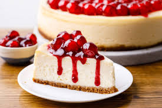

Home
Cheesecake

Classic Cheesecake
Ingredients
For the base:
- 200 g digestive biscuits
- 100 g melted butter
For the filling:
- 600 g cream cheese
- 150 g sugar
- 3 eggs
- 200 ml cream
- 1 tsp vanilla extract
Instructions
- Crush the biscuits into fine crumbs and mix with melted butter.
- Press the mixture into the bottom of a baking pan to form the base.
- In a bowl, mix cream cheese and sugar until smooth.
- Add eggs one at a time, then stir in cream and vanilla.
- Pour the filling over the base.
- Bake at 160°C (320°F) for 45–50 minutes.
- Let it cool, then refrigerate for at least 4 hours before serving.
Tips
- Do not overmix to avoid cracks.
- Let it cool slowly for best texture.
- Top with fruit, chocolate, or caramel.